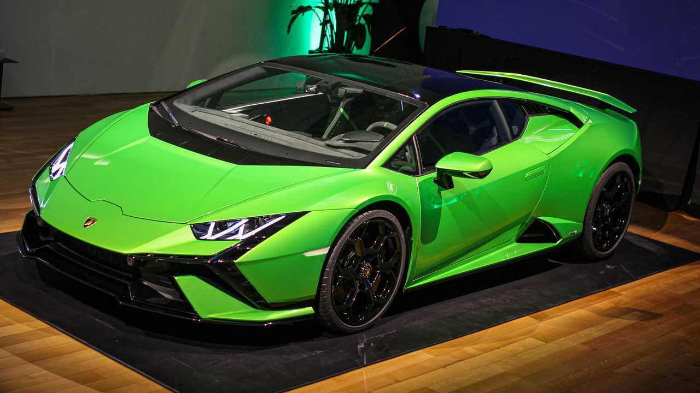
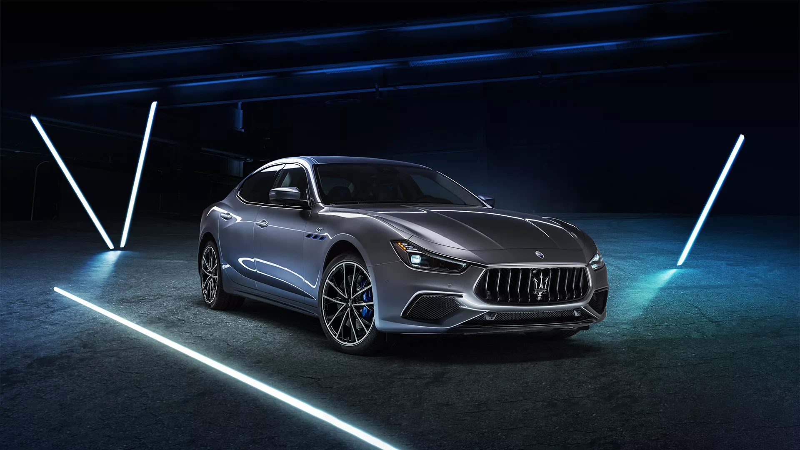
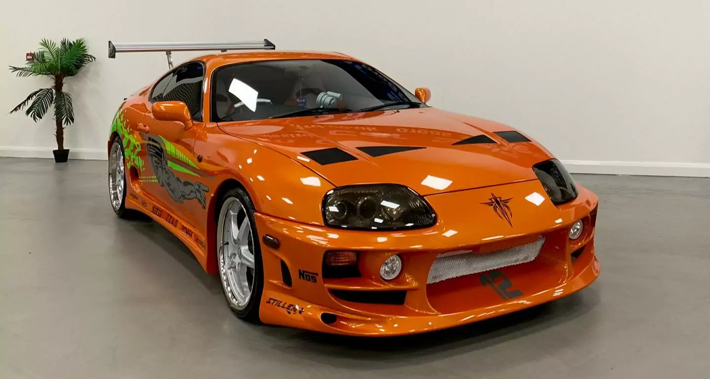
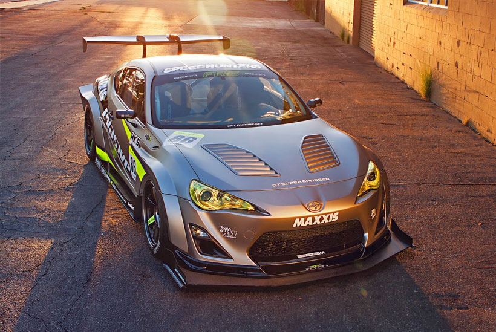

MUSEO CAR GALLERY ____
ESTA SECCION MUESTRA LA GALERIA DE NUESTRO MUSEO
MUSTANG H.GT Legend Edition
Ultimate Bodykit
AÑO: 2019
Este vehiculo es de los mas populares dentro de nuestro museo por ser un vehiculo altamente catalogado como el vehiculo mas "RAPIDO" del mundo, Al igual por formar parte de la cadena de remasterizacion de vehiculos BODY KIT simplemente es un vehiculo esamblado desde cero y perfectamente afinado.

LAMBORGHINI HURACAN
HuracanG9
2000
Este vehiculo es de la coleccion de LAMBORGHINI mas perfeccionada de la historia , esta basado en la primera version de los autos deportivos de LAMBORGHINI por lo cual es una fase muy allegada a lo que fue sus primeras ideas del SR.LAMBORGHINI,Solo existen 4 modelos en Todo el Mundo.

MASERATI
Maserati_ItalianZ
2022
Este Vehiculo es uno de los mas LUJOSOS de todo el mundo es el primer vehiculo de la MARCA MASERATI en ser el mas lujoso , ya que cuenta con gran parte de su cuerpo hecho de grafito y policarbono haciendolo un vehiculo totalmente lujoso al igual que es el mas costoso de todos los modelos existen en el mercado de MASERATI hasta la fecha de hoy.

SUPRA
SUPRA BODY KIT
2020
Este vehiculo es una fase muy bien hecha de otras versiones de SUPRAS en este caso es de las mas costososas por su gran proceso en el cual fue llevado.

BENTLEY
BODY KIT
2018
Este vehiculo es el primer BENTLEY con contar con tecnologia de punta , ya que fue una colaboracion con SPACEX
